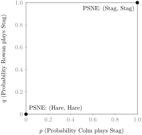
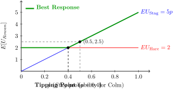
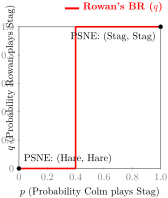
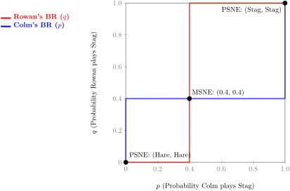

Section 2.6 MSNE and Best Response Functions
So far, we’ve looked at games solving for either pure strategy or mixed strategies or Nash equilibria (PSNE or MSNE). Some games, including some we’ve solved, have both PSNE and MSNE. We will look at how to systematically assess whether games have PSNE, MSNE or a combination of both.
Subsection 2.6.1 Step 1: Finding PSNE
We know this one already. Find any PSNE using the underlining method.
Subsection 2.6.2 Step 2: "Odd Number" Rule of Thumb
In 1971, Robert Wilson found that nearly all finite games have an odd number of Nash equilibria. This allows us to predict whether a game will have MSNE based on the number of PSNE found in the first step. The table below summarizes the rule of thumb we can use.
| Underline Method Result | Can an MSNE exist? | Total NE Count | Common Examples |
| 0 Pure Equilibria | Yes (Always 1) | 1 (Mixed) | RPS, Matching Pennies |
| 1 Pure Equilibrium | No | 1 (Pure) | Prisoner’s Dilemma |
| 2 Pure Equilibria | Yes (Always 1) | 3 (2 Pure, 1 Mixed) | Stag Hunt, Chicken |
Subsection 2.6.3 Step 3: Pruning
A player will never assign a positive probability to a strictly dominated strategy. So it is important to check for those. Is there a strategy that always gives a lower payoff than another strategy regardless of what the other player does? If so, that strategy needs to be crossed out. If by doing this pruning process, the resulting payoff matrix is a single cell or contains a single column or row (one action left for a player), there is no MSNE. The only equilibrium is the PSNE of that cell.
Recall Rowan and Colm’s first game, the Prisoner’s Dilemma. Can this game be pruned? Does it have an MSNE?
| Colm | |||
| Stay Silent | Testify | ||
| Rowan | Stay Silent | -1, -1 | -10, 0 |
| Testify | 0, -10 | -5, -5 | |
Subsection 2.6.4 Step 4: Plot Reaction Functions
The final step in the process of finding all possible Nash equilibria is to find the MSNE, if any. We do so by calculating the expected payoffs for each player given the probability that the other player plays a particular strategy. We then plot the optimal decision each player would make given these probabilities, what we call a best response or reaction function.
Let’s use Stag Hunt game from earlier as our framework to understand best response or reaction functions.
Step 1: Finding PSNE
By the underlining method, we find two PSNE.
| Colm | |||
| Stag | Hare | ||
| Rowan | Stag | \(\underline{5}, \underline{5}^*\) | 0, 2 |
| Hare | 2, 0 | \(\underline{2}, \underline{2}^*\) | |
Step 2: "Odd Number" Rule of Thumb
The Stag Hunt game has two PSNE so it will have an MSNE.
Step 3: Pruning
We know the game will have a MSNE, so pruning won’t work. Neither player has a strictly dominated strategy.
Step 4: Plot Reaction Functions
Let \(p\) be the probability that Colm plays \(Stag\text{,}\) and \(q\) be the probability that Rowan plays \(Stag\text{.}\)
First, we want to plot Rowan’s reaction or best response function (\(q\) as a function of \(p\)): what she will do given what Colm does (probabilistically). Reaction functions will usually look like a step-functions.
-
For low values of \(p\text{,}\) \(q\) will be pinned at \(0\) or \(1\text{.}\) In other words, when the probability of Colm playing \(Stag\) is low, Rowan will be better off playing \(Hare\text{.}\)
-
At some critical threshold or tipping point, Rowan is exactly indifferent between playing \(Stag\) or \(Hare\text{,}\) so \(q\) can be any value between \(0\) and \(1\) (a vertical line segment).
-
For high values of \(p\text{,}\) it flips to the opposite edge at \(q=1\text{,}\) where Rowan always plays \(Stag\) because her expected utility is higher than playing \(Hare\text{.}\)
We can use these reaction function plots to map out not only MSNE but also the game’s PSNE. Any PSNE is simply a MSNE for which one probability is 1 and the other 0. For example, we know this Stag Hunt game has two PSNE: \((Stag, Stag)\) and \((Hare, Hare)\text{.}\) Probabilistically, \((Stag, Stag)\) is simply \((1,1)\text{,}\) meaning Rowan and Colm both always choose \(Stag\text{.}\) \((Hare, Hare)\) is \((0,0)\text{.}\) So we can plot the PSNE in the best response maps, as shown below:

Now moving on to finding the MSNE by finding each player’s best response or reaction function. Since the game is symmetrical, we need only find one player’s reaction function and mirror it later on. To begin, let’s look at Rowan. Rowan’s expected utility helps us build her reaction function.
By comparing the expected utilities of Rowan’s actions \(Stag\) and \(Hare\text{,}\) we see that Rowan’s payoff from \(Hare\) is greater than from \(Stag\) as long as the probability \(p\) that Colm chooses \(Stag\) is less than 0.4 (if \(p<0.4\text{,}\) then \(E[U_{Stag}]<E[U_{Hare}]\)). At \(p=0.4\text{,}\) Rowan is indifferent between \(Stag\) and \(Hare\text{,}\) because she receives the exact same expected payoff \(E[U_{Stag}]=E[U_{Hare}]=2\text{.}\) If \(p>0.4\text{,}\) then her expected payoff from \(Stag\) is always greater than \(Hare\) and she will always choose \(Stag\text{.}\)


We can do the same for Colm, and we end up with the following diagram.

Where the two lines intersect, we find the MSNE. In this case, \(MSNE={(0.4,0.4)}\text{.}\) So Stag Hunt has three Nash equilibria: two PSNE and one MSNE.